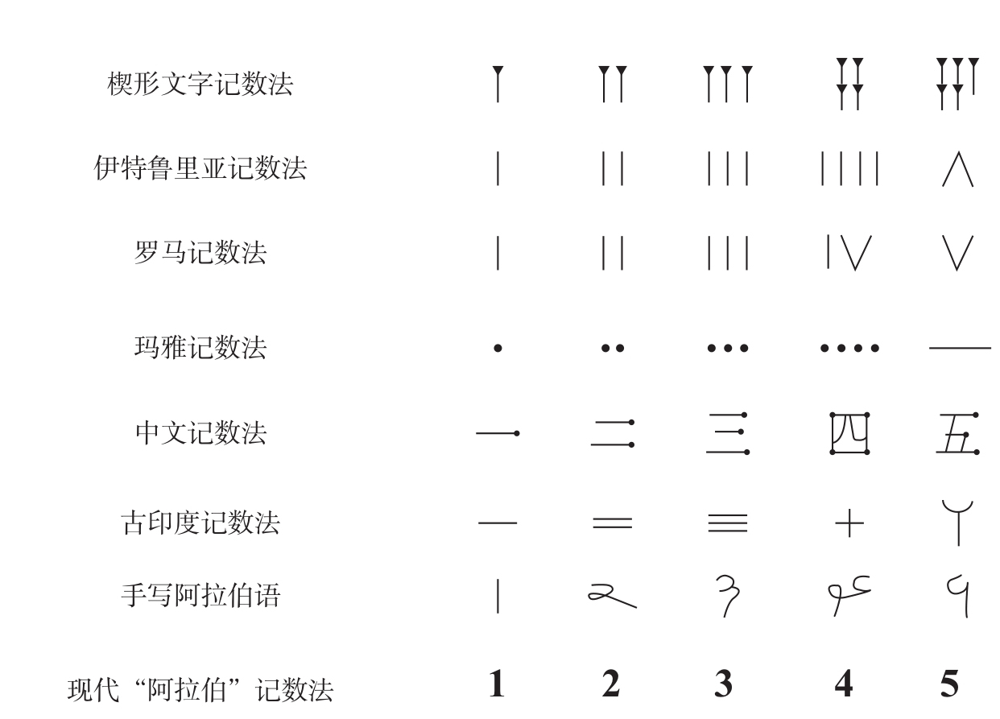

长久以来，我一直为罗马数字所吸引。几个起始数字如此简单，而其他数字又复杂得令人迷惑，这看上去有点矛盾。起始的3个数字——Ⅰ（1）、Ⅱ（2）和Ⅲ（3）——所遵守的规律一目了然：有几个竖条就代表几。不过，数字Ⅳ（4）打破了这个规律，它引入了一个表面上完全看不出意义的新符号Ⅴ（5），以及一个减法运算——Ⅴ-Ⅰ，这个运算似乎是随意的，那为什么不用“6-2”“7-3”，甚至“2×2”呢？
回顾数字符号的历史，我们发现，前3个罗马数字就像是活化石，它们把我们带回到远古时代，那时人们还没有发明书写数字的方法。人们发现，想要记录他们拥有的绵羊或者骆驼的数量，只要在木棒上刻下相同数量的刻痕就可以了。这些刻痕是对计数的持久记录。事实上，这正是符号记数法最初始的形态，因为5个一组的刻痕可以代表任意5个客体。然而，这一史实更加凸显了罗马数字Ⅳ的神秘性。为什么人们放弃了这种简单实用的记数法？Ⅳ这个给读者带来注意和记忆负担的、任意的记号，又是如何取代这个普通人都能理解的、简单明了的记号的呢？更重要的是，如果真是因为某种原因，记数系统需要做一些修订，那为什么前3个数字Ⅰ、Ⅱ和Ⅲ可以幸免呢？
难道这仅仅是个意外？一定有一些偶然事件影响了幸存至今的罗马数字符号的命运。然而，罗马数字Ⅰ、Ⅱ和Ⅲ的独特性，却具有一种超越了地中海国家历史的普遍特征。乔治·伊弗拉（Georges Ifrah）在他那本关于数字记数法历史的巨著中介绍1，在所有文明中，前3个数字都是通过重复相应次数的代表“1”的符号来表示的，恰如罗马数字这样。而且，大部分的文明，甚至可能是所有文明，都会在数字大于3的时候停止使用这一规则（见图3-1）。比如，中文分别用1条、2条和3条水平横线代表数字1、2和3，却采用了一个差别相当大的符号“四”来表示数字4。再来看阿拉伯数字，尽管表面上看起来所有数字都是随意的，实际上它也遵循同一种规律。数字1是1条单独的竖杠，数字2和3实际上是书写时将2条和3条水平横杠连在一起的变形。只有4及以上的阿拉伯数字，才是真正随意的。

在世界各地，人们通过重复相应次数的相同符号来表示前3个数字。大于数字3或4时，几乎所有的文明都放弃了这种模拟记数法，这一现象表现出人类“即时”理解数字的局限。
图3-1 世界各地的模拟记数法
资料来源：重绘自Ifrah, 1994。
遍布世界的几十个人类社会最终选择了同一个解决方案。在几乎所有的社会中，前3个或4个数字都是由相应数量的记号组成，而接下来的数字基本上就是任意的符号。对于这种显著的跨文化汇集，需要一个具有普适性的解释。很明显，排列19个记号来表示数字19，对于写作和阅读都会是一个无法容忍的负担：一次写19个笔画，费时费力又容易出错，而且读者又该如何区分19与18和20呢？因此，一种比排列横杠更紧凑的记数法的出现似乎也合情合理。然而，这还是没有解释为什么所有地区的人一致选择在数字大于3或4的时候不再使用这种方法，不是5或8，也不是10。
我们很容易把这一现象与婴儿对数的辨别能力相提并论。人类婴儿可以轻而易举地区分1个对象和2个对象，或者2个对象和3个对象，但他们的能力很难超出这个范围。显然，婴儿对记数法的演变没有什么影响。我们甚至可以假设：成年人的数量辨别能力相对于婴儿也没有发生变化。其中的一个原因可能是，大于数字3后，线条符号表示的数字将不再清晰可辨，因为我们不能一目了然地区分和。
因此，罗马数字使我们能够研究，动物和人类婴儿的原始计数能力到底在多大程度上延伸到了成年。在本章中，我们旨在寻找能够带领我们回溯人类算术根基的活化石和其他线索，如罗马数字。事实上，许多迹象表明，这种对数量的原始表征在成年人身上依然存在。尽管数学语言和文化的发展使我们人类的能力远远超越了动物那有限的数字表征，但是这种原始的模块依然是我们数字直觉的核心。它对我们如何感知、构想、书写和谈论数字都有相当大的影响力。